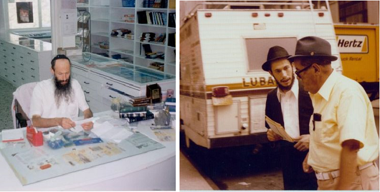

Have You Met R’ Tanchum Yet?
You will probably find it hard to believe that the man with the long white beard, one of the veteran and outstanding personalities of the southern city of Beer Sheva, was born in Minsk and went through numerous fascinating life journeys until he came to the Chassidic community in Samarkand. He later moved to Eretz Yisroel, had yechiduyos with the Rebbe, and was one of the pioneers in Chabad mivtzaim in Beer Sheva. * The fascinating story of Rabbi Tanchum Boroshansky.

This is the story of Rabbi Tanchum Boroshansky, a neighbor and close friend of my father, and one of the images of my childhood that I continue to carry with me through life.
***
“I was born in Minsk Erev Chanuka 5712 to a family that kept mitzvos under the difficult conditions of Soviet Russia. My maternal grandfather, R’ Yeshaya Henoch Lipman, may Hashem avenge his blood, was from Poland, a Gerrer Chassid, who wound up in the Soviet Union after the revolution. Despite communist persecution, he kept his long beard and was unashamed of his Jewish appearance. Even during the years of terror, he continued to work as a shochet for the Jewish community in Minsk, until one terrible night in 1937, when he was taken away from his home by the NKVD and disappeared.
“A few years ago, the interrogation files from those years were opened. We learned that he was executed for the crime of being a counter-revolutionary; this was on 11 Teves.”
R’ Tanchum remembers almost nothing from life in Minsk because when he was about a year old, the family moved to Frunze (Bishkek today), the capital of Kyrgyzstan.
“When I was three, my father, R’ Yaakov, brought an older man to our house for a few weeks and he taught me the alef-beis and how to read. I was able to read and daven.”
In the city there was a shul where people occasionally gathered for t’fillos. Since the city was far from the centers of Soviet government, it was more conducive to maintaining Jewish life, with less danger involved.
“In Frunze, my family first met Lubavitcher Chassidim. There were Lubavitcher families who had tried escaping Russia in 1947, but after the gates were closed and the Iron Curtain was dropped once again, they went to Frunze. Among the families that we knew was the Lebenhartz family.
“Despite the relative ease in keeping mitzvos, there was a certain danger that hovered over the Chabad Chassidim. They tried to downplay the fact that they were religiously observant in general and ‘Schneersohnim’ in particular. One time, my father was on a bus when he suddenly noticed R’ Meilech Lebenhartz. My father whispered to him, ‘It’s 19 Kislev today.’ But R’ Meilech ignored him completely. It was only afterward, when they met in a private place, that R’ Meilech explained that one does not speak of these things in public for one could never know who might be listening.”
ENCOUNTER WITH CHASSIDIC LIFE
Despite the lesser degree of persecution, because there were few religious Jews in Frunze, it was hard to maintain normal Jewish life. R’ Yaakov knew that if he wanted to provide his children with a Jewish chinuch, he would have to move.
When R’ Tanchum was around seven years old, the family moved to Samarkand where there was a flourishing Jewish community.
Why did he choose Samarkand?
“It was extraordinary divine providence. Among the Lubavitchers living in Frunze was the Chassid, Rabbi Berel Yaffe. He was born in the famous Chassidic town of Nevel and had attended Yeshivas Tomchei T’mimim in Lubavitch. He later studied shechita and he would travel around to villages and towns and made a living as a peripatetic shochet. In 5691, he was arrested after a Purim farbrengen he hosted in his home for students of the yeshiva. After interrogation, he was exiled to Kazakhstan for three years. When his exile was over, he went to Frunze and from there to Samarkand.
“Some time later, his wife’s son, R’ Binyamin Malachovsky, was sent to Frunze to convince my parents to move too, for Samarkand had a large Chabad community and it was possible to keep Torah and mitzvos with relative ease. Needless to say, my father accepted the idea enthusiastically.”
Jews in Samarkand had minyanim on weekdays, Shabbos and holidays, and there was a mikva, but it was hard to avoid attending the local public school.
“I joined the children of Anash who attended the special school system for youth who worked and studied. They chose this track because in some of the classes there were studies only four days a week. Thus, we enjoyed two years of avoiding school on Shabbos.”
When the school day was over, the children attended Torah classes. R’ Tanchum was taught by Rabbi Sholom Vilenkin. When he was older, he began learning Gemara with the famous Chassid, Rabbi Chaim Shneur Zalman Kozliner (Chazak) who was one of the leading personalities of the community in Samarkand. Then he learned with Rabbi Michoel Mishulovin (today a mashpia in Nachalas Har Chabad), Rabbi Yaakov Notik, and others.
MOSHIACH IS COMING IN FIVE MINUTES
“The relationship that developed between my family, which was Litvish, and the Chabad Chassidim, was special. This relationship grew much stronger in Samarkand.
“Here’s a story that shows how dominant a force Chabad was in Russia in those days. In my childhood, I learned to daven nusach Ashkenaz, but when we went to Samarkand, we wanted to daven the nusach of the Lubavitcher Chassidim. However, since there were no siddurim with this nusach, I davened nusach Sfard for a while, which is similar to the Chabad nusach. It was only later that Chabad siddurim came to Russia and we finally davened Nusach Ari.”
R’ Tanchum still remembers learning in the secret yeshiva in Samarkand with the bachurim Avrohom Pressman and Bentzion Robinson, who drew him into the wonderful world of Chassidus.
“These shiurim, together with the special Chassidic atmosphere of that time, turned me and my family into devoted Chassidim of the Rebbe.”
Did you have any connection with the Rebbe in those years?
“Throughout my years in Samarkand until I moved to Eretz Yisroel, I never saw a picture of the Rebbe and had no idea how he looked. Occasionally, friends received letters from relatives who said that ‘grandfather’ said such and such and sent regards. I didn’t even know of anyone who had a picture of the Rebbe.”
Can you share a special moment that you remember from those years?
“I remember the farbrengen we held as a result of an answer from the Rebbe that was sent to us secretly. During the farbrengen, they said that a letter had come from Meir Okunov, and the letter said that the Rebbe said in a recent farbrengen that Moshiach was coming in five minutes. Throughout the farbrengen, they spoke excitedly about this and even tried to calculate how much five minutes is to Hashem.”
THE REBBE’S DIRECTIVE
In 5731, cracks began to appear in the Iron Curtain and the gates of Russia partially opened. Many Jewish families took the opportunity to move to Eretz Yisroel.
The Boroshansky family submitted a request to leave, with the excuse of uniting families, i.e., distant relatives. Previously, a request like this would have been turned down, but since this was part of a government plan, their request was approved and in Elul 1971 they left for Eretz Yisroel.
“When we left for Eretz Yisroel, we were full-fledged Lubavitchers and we joined the new Chabad neighborhood that had developed in Kiryat Malachi. The neighborhood was just starting and few families lived there.
“Some fellow bachurim and I went to learn in the yeshiva in Kfar Chabad. Since we did not know Hebrew yet, the hanhala of the yeshiva provided shiurim for us in Yiddish.”
After Tishrei 5732, R’ Mordechai Kozliner opened a yeshiva in Nachalas Har Chabad and R’ Efraim Wolf told the bachurim who were new immigrants to learn in the new yeshiva.
“For Pesach 5732, when I was 20, I got permission from the army and went to the Rebbe. In those days, the way it went was the talmidim of the k’vutza arrived before Pesach and returned after Nissan of the following year. During that year, I had yechidus for my birthday, Erev Chanuka 5733. During the yechidus, I gave the Rebbe a note and the Rebbe spoke to me in Yiddish. After some time, the secretaries were told to make sure that the group of bachurim who came from Russia should stay another half a year until Elul and not return as the other bachurim did, at the end of Nissan.”
Can you tell us something about your yechidus?
“The subjects were mainly personal.
“Before we returned to Eretz Yisroel, we were instructed by the Rebbe to farbreng during Elul in all the Chabad yeshivos in Eretz Yisroel. We were six bachurim: R’ Shlomo Galperin, R’ Peretz Laine, R’ Moshe Chaim Levin, R’ Elozor Vilenkin, R’ Zalman Sirota and me. Upon our return, we reviewed the Rebbe’s farbrengen for all the bachurim in yeshivos in Eretz Yisroel.”
A special event from that period is etched in R’ Tanchum’s mind. Although 45 years passed since then, he is still excited about it:
“Before Rosh Hashana 5734, the Rebbe said that on Rosh Hashana there should be services in the Tzemach Tzedek shul in old Tzfas. Just a few months earlier, in the summer of 5733, the shliach, Rabbi Aryeh Leib Kaplan came to Tzfas and the Rebbe told him to renovate the shul established by the Chassidim of the Tzemach Tzedek, which was destroyed in the War of Independence.
“Miraculously, R’ Kaplan was able to accomplish this in that short period of time. On Rosh Hashana, I was part of the minyan there together with some other Chassidim. We felt we were making history.”
R’ Tanchum was already in yeshiva in Kfar Chabad during the outbreak of the Yom Kippur War. During the war and the lull that followed, he traveled with other bachurim to raise the morale of the soldiers on the various fronts, to put tefillin on with them and to bring words of encouragement from the Rebbe.
“In Tishrei 5736/1975, I was at the Rebbe again and had yechidus, in the course of which I was told to return to Eretz Yisroel and start getting involved in getting set up for life. In other words, to find a shidduch.
“That year, on 3 Tammuz, I married the daughter of Rabbi Shlomo Kupchik of Kiryat Ata.”
CHALLENGES FROM DAY ONE
R’ Tanchum felt a strong sense of shlichus and after he married, he wanted to move to an outlying city and get to work there. From friends and family he heard that many Russian immigrants settled in Beer Sheva and they had nobody seeing to their spiritual needs.
R’ Tanchum wrote to the Rebbe and asked for his consent and blessing to move to Beer Sheva and spread Torah there among the Russian-speaking population. Since the answer did not arrive quickly, he interpreted the lack of response as consent. The day after Tisha B’Av 5736, he packed his bags and he and his wife moved to Beer Sheva.
The day they arrived, a phone call finally came from Rabbi Segal of Afula, through whom answers from the Rebbe to Anash arrived at that time. R’ Segal told them the Rebbe said to remain in Rishon L’Tziyon. Oh!
As a loyal Chassid, R’ Tanchum immediately called a moving company and ordered a truck for the next day to return all their things, which had just arrived in Beer Sheva, to Rishon L’Tziyon. But when he met with Chassidim in Beer Sheva, who were excited that he came, and he told them the explicit answer he received, they found it hard to accept.
On their own, they called the Rebbe’s office and explained what happened and asked for the Rebbe’s approval for the Boroshanskys to remain and strengthen the small Chabad community. After a while, they were told the Rebbe said the Boroshanskys should stay.
“They happily came back to me with the answer, but I didn’t accept it since I had received a different answer. As a compromise, I went to the home of Rabbi Yosef Simcha Ginsberg who lived on nearby yishuv Omer and discussed it with him. R’ Ginsberg suggested we call the secretaries and ask R’ Chadakov what to do. We called and presented the situation to R’ Chadakov who said he would present it to the Rebbe, and when he had an answer, he would let us know.
“After a while, he called back with an answer. ‘Since you arrived in Beer Sheva, remain in Beer Sheva,’ and that was that.”
The truck driver who came the next day was compensated for the last-minute cancellation and since then, R’ Tanchum and his family have lived in Beer Sheva.
BEER SHEVA ON THE MAP
“From a Chassidic perspective, Beer Sheva was a desert. You could count the number of Lubavitchers on one hand. The Chassid, Rabbi Avrohom Cohen who passed away last year, was the ‘Nachshon’ when it came to hafatza in the city. At that time, we learned together in the kollel of the rav of the city, Rabbi Eliyahu Katz.”
The two young men, Rabbi Cohen and Rabbi Boroshansky, began doing Chassidic outreach in the city.
They began with large central menorah lighting events, and when the idea of having Lag B’Omer parades was initiated, the two of them made a parade the very first year. They gave out mishloach manos on Purim and read the Megilla on army bases; all this, along with the usual year-round activities, like a tefillin stand in the old city that served dozens of men on Fridays.
“Today, all these things are a given, but in those days, they were a novelty. We were on fire.
“One of the first activities that we did was in Tishrei 5737, when we made a public sukka in the old city that enabled thousands of passersby to do the mitzvos of dalet minim and eating in a sukka. After Sukkos, the sukka was rebuilt (without the s’chach) to serve as a tefillin stand. It is now located there for over forty years.”
The goal, for which R’ Boroshansky went to Beer Sheva, was to work with Russian immigrants.
“Along with learning in kollel, I started reaching out to Russian immigrants. They were an intellectual, academic demographic and the shiurim given to them were on a high level.”
After a few years of such activities, R’ Tanchum was given the formal job of running the Tzach branch in Beer Sheva. Every 19 Kislev, a farbrengen was held that was attended by thousands in the nicest hall in Beer Sheva. Despite the small size of the Chabad community at the time, all of the local public servants and the rabbanim considered it a privilege to attend these gatherings. Every year, a raffle was held for a ticket to go to the Rebbe.
Every summer, classes were arranged for the schoolchildren on vacation. These shiurim drew hundreds of children from all over the city and they learned about Judaism in the summer months.
In the years that followed, when the activities branched out and expanded, someone was needed to handle all of the operations on a full-time basis. That is when the shliach, Rabbi Zalman Garelik came to town; he has been running the central Chabad House ever since.
CAREER SHIFT
At that point, R’ Boroshansky began running a center for Stam and religious items. It was fascinating to see how Hashem arranges things, how a person gets involved in something by divine providence and it afterward turns into his life’s mission. This is how it happened:
In 5740, when word about R’ Boroshansky running a tefillin stand in the old city was well known, Rabbi Avrohom Silbert a”h, rosh yeshiva of Yeshivas Ohel Shlomo, asked him for help in checking his students’ tefillin. R’ Tanchum had no experience with this but since he was asked, he took the tefillin to Yerushalayim to have them checked.
On his way back, he passed through Nachalas Har Chabad where Rabbi Wolowik worked on battim. He started studying the craft which later became his life’s work.
R’ Tanchum decided to learn the skills of checking Stam, and in the months that followed he studied the laws of Stam in depth with Rabbi Yosef Simcha Ginsberg. His name became known in Beer Sheva as the expert to check Stam.
He started doing this out of his home but when his family grew, he decided to rent an office and do his work there. His small office also served as the Tzach branch in Beer Sheva.
As time went on, R’ Boroshansky became proficient in all aspects of tefillin and mezuzos. He developed a special sense to detect forgeries and other tricks. In his desk drawer he has numerous counterfeit mezuzos and parshiyos of tefillin that were written, printed, or corrupted by various fraudsters.
When it was suggested that he take a larger place he was taken aback to hear the rental fee, 3000 shekels, a huge amount, even for today, but in those days, even more so.
He did not want to decide on his own and asked the Rebbe about expanding, considering the high rent. The Rebbe’s answer was, “Shocking, if the money exists it needs to be put to use and not wasted.” Of course, the idea was dropped.
The Stam center eventually moved to a more spacious place that enabled R’ Tanchum to set up a permanent Stam exhibit along with tefillin battim in various stages of production. This exhibit later turned into a mobile exhibit that was presented, and is still presented, in various places. People are excited when they learn for the first time what’s hiding inside the mezuza and what is behind the square black boxes.
R’ Boroshansky instilled the awareness of the importance of kosher tefillin and mezuzos among thousands of residents of Beer Sheva. Rabbanim of the city and roshei yeshivos all signed a proclamation recommending that residents buy their tefillin and mezuzos only from the Keren HaMitzvos store owned by R’ Tanchum.
It is forty years now that R’ Tanchum has been working with Stam. He says:
“In recent years, I’ve been seeing a serious deterioration in the kashrus of Stam. There are sellers whose wares seem nice, even mehudar, but the source is not kosher! I have testimony regarding mezuzos that were written by Ukrainian or Chinese gentiles whose writing is nice and cannot be identified as invalid. The market today is completely out of control and the goal is to sell at the lowest prices. It has reached a point where sometimes people come with their tefillin or mezuzos that they bought in Judaica stores from religious people, but it turns out, they are completely pasul.”
R’ Boroshansky is always soft-spoken, but when he talks about this, he raises his voice, as this upsets him greatly.
“The absurdity is that there are people who are stringent when it comes to kashrus or shechita. There is a sort of competition between the levels of stringency between Badatz and rabbanim who provide hechsherim. But when it comes to Stam, it’s a free-for-all. Meat, matzos and food are manufactured in factories under strict supervision and nobody considers eating some homemade product that an anonymous vendor has for sale, but the Stam market is completely unregulated. There are sofrim who write at home without rabbinic supervision, so the customers have to rely on their word that the parshiyos were written properly. But the scribes are subjective, they need parnasa!”
What do you suggest?
“I have a practical suggestion that can improve and correct the untenable situation. Rabbanei Chabad should establish institutes of Stam in which sofrim write under constant rabbinic supervision, and the work of these sofrim should get a special rabbinic hechsher attesting that they were written properly. Chabad Houses and other suppliers of religious articles can buy tefillin and mezuzos with peace of mind, knowing that what they buy is kosher and mehudar.”
Won’t that make them more expensive?
“It could make it a little more expensive, but it will be money well spent, and the scribes who participate will be able to earn a reasonable wage.”
R’ Boroshansky urges people to buy only from G-d-fearing dealers and not be swayed by bargains and deals.
“When it’s cheap, it’s not even worth that low price,” he declares. “Even when you are buying tashmishei k’dusha for mivtzaim, don’t be fooled by the tempting price. Just buy from a place where you know, for sure, what the source is and who wrote it.”
Beis Moshiach (staff). "Have You Met R’ Tanchum Yet?." Beis Moshiach, no. 1145 (December 11, 2018).